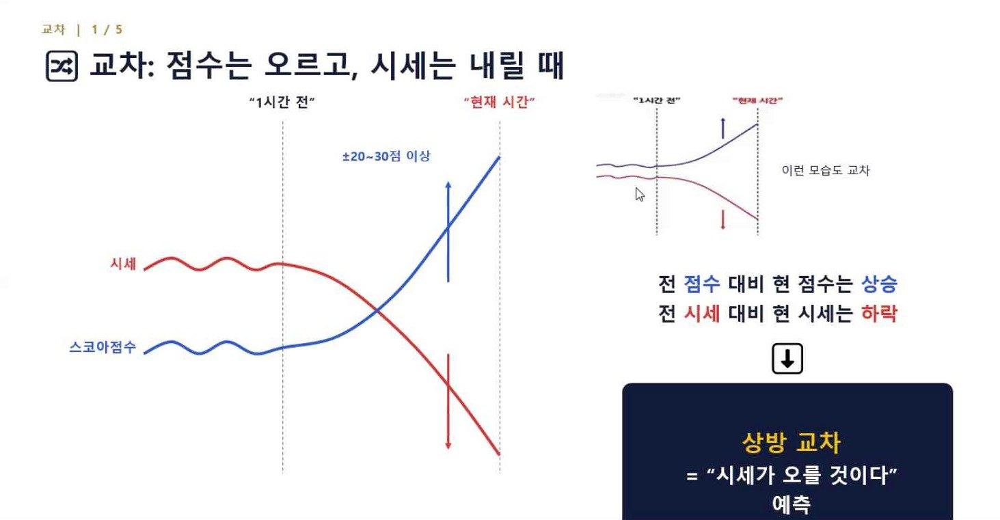
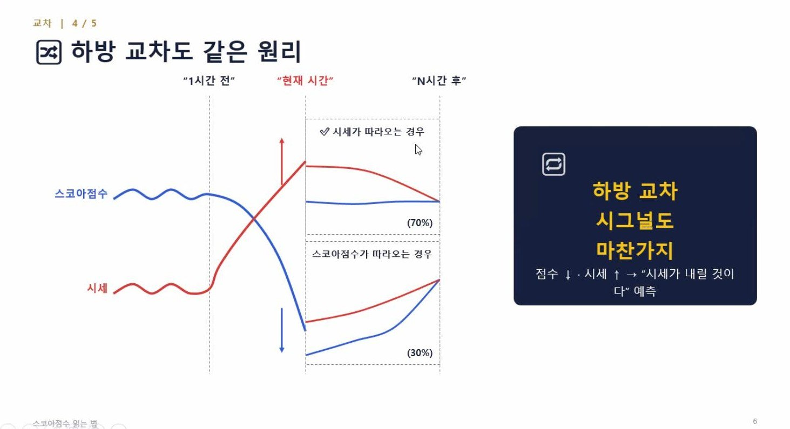
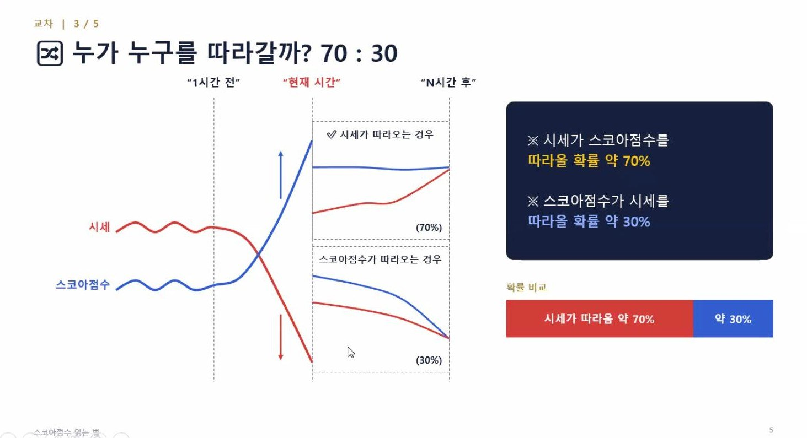
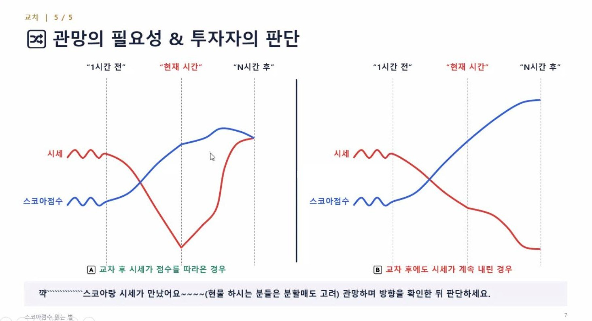
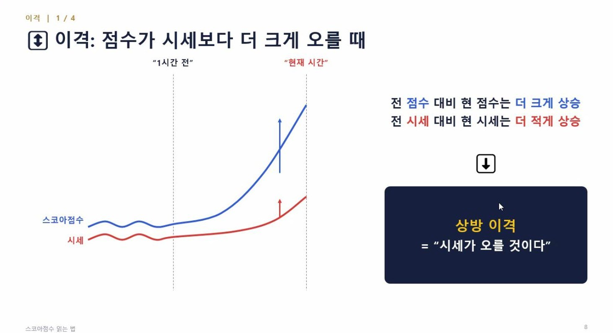
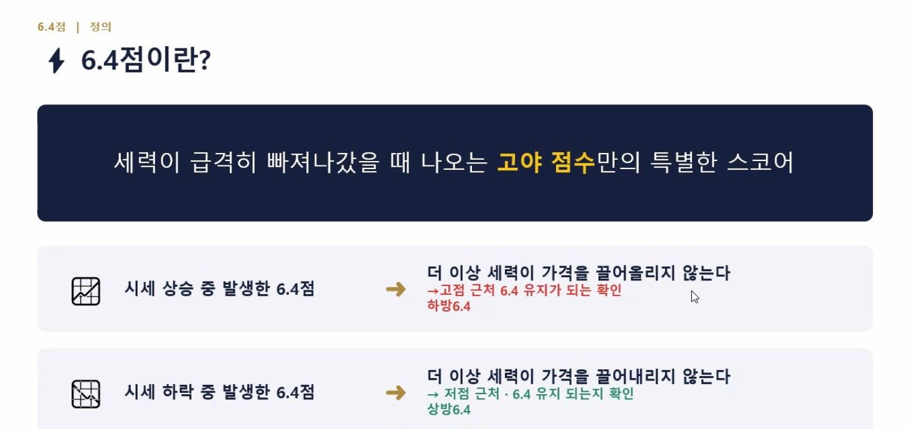
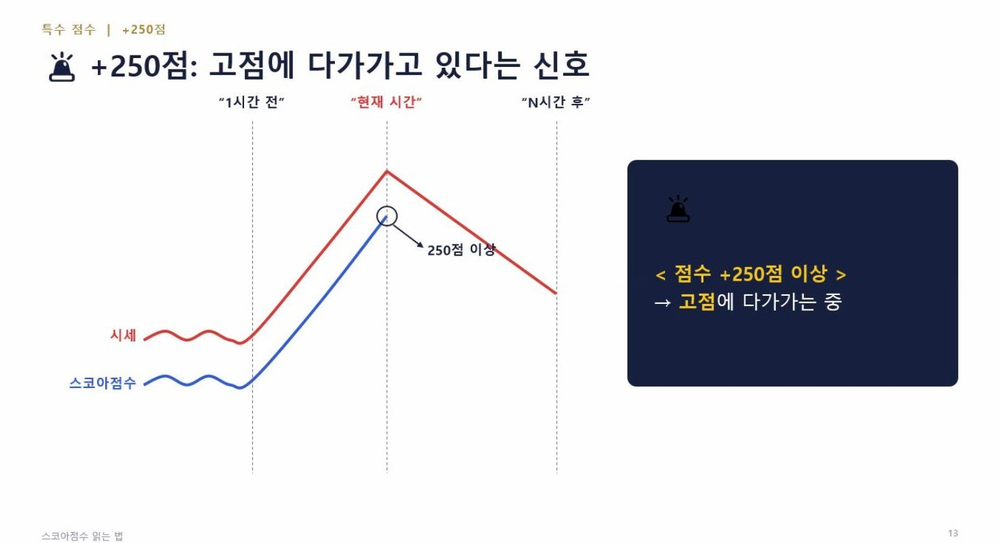
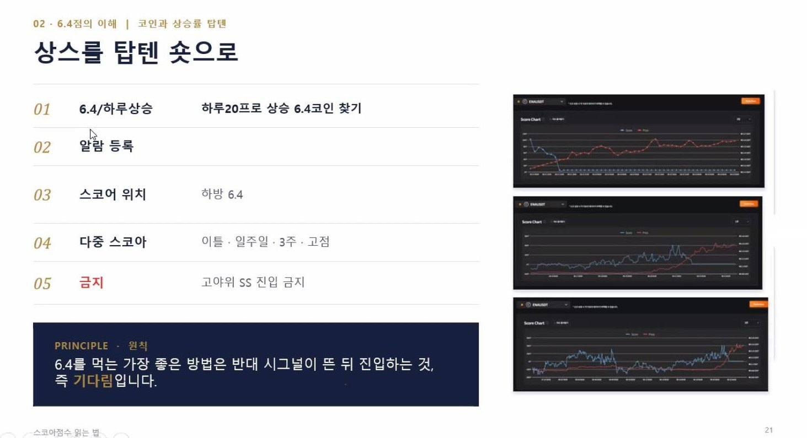
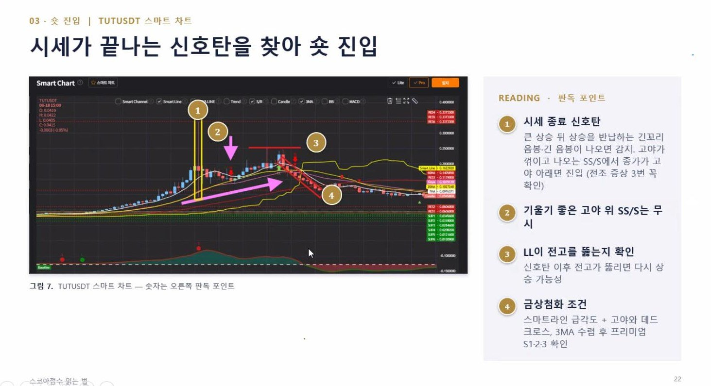
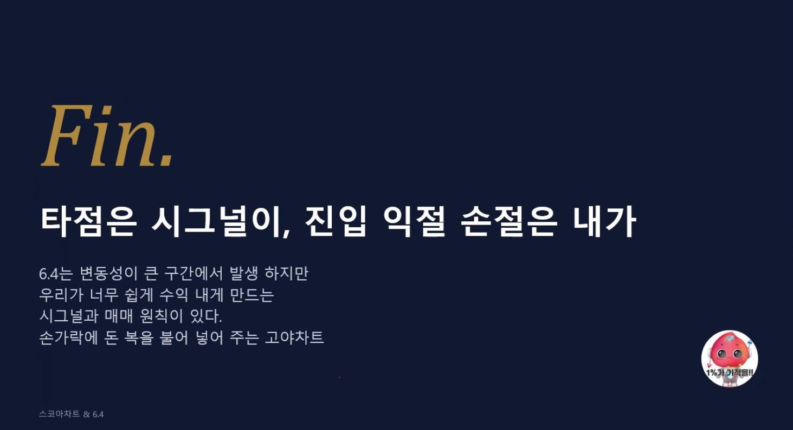

UP CROSS
상방 교차
전 점수보다 지금 점수는 오르고, 전 시세보다 지금 시세는 내릴 때예요.
“시세가 오를 것이다”라고 예측해요.
2026.11.12 강의 정리
시세(빨간색)과 스코어점수(파란색)를 이전과 지금으로 비교해, 다음 방향을 읽는 법이에요.
두 선이 어긋나면 신호를 보고, 따라오는지 한 번 더 확인한 뒤 판단해요.
이 페이지는 강의 슬라이드에 나온 내용만 짧게 정리했어요.
01 · CROSS
교차는 점수와 시세가 서로 반대 방향으로 움직일 때예요. 차이 크기는 슬라이드에 ±20~30점 이상으로 표시돼 있어요.
UP CROSS
전 점수보다 지금 점수는 오르고, 전 시세보다 지금 시세는 내릴 때예요.
“시세가 오를 것이다”라고 예측해요.
DOWN CROSS
반대도 같은 원리예요. 점수는 내리고 시세는 오를 때예요.
“시세가 내릴 것이다”라고 예측해요.


02 · AFTER THE CROSS
교차가 나왔다고 바로 사지 않아요. 그다음에 누가 누구를 따라가는지를 먼저 봐요.
확률
교차 이후 시세가 스코어점수를 따라올 확률은 약 70%, 스코어점수가 시세를 따라갈 확률은 약 30%예요.
관망
방향을 확인한 뒤에 판단하세요. 현물을 하는 경우에는, 두 선이 만나면 분할매도를 고려하라는 메모도 있어요.


03 · DIVERGENCE
이격은 둘 다 같은 쪽으로 가지만, 움직이는 크기가 다를 때예요.
상방 이격
전 점수보다 지금 점수는 더 크게 오르고, 전 시세보다 지금 시세는 더 적게 오를 때예요. 의미는 “시세가 오를 것이다”예요.
이격 이후에는 점수가 시세 쪽으로 다시 내려오기도 해요. 스코어점수가 시세를 따라올 확률은 교차보다 더 낮다고 되어 있어요.
우선순위
시세가 스코어를 따라갈 확률이 더 높기 때문에, 교차 시그널을 이격 시그널보다 우선해서 봐요.

04 · SPECIAL SCORE
세력이 급격히 빠져나갔을 때 나오는, 고야 점수만의 특별한 스코어예요. 나왔다고 끝이 아니라, 유지되는지도 확인해요.
시세 상승 중 · 하방 6.4
고점 근처인지, 6.4가 유지·진행되는지를 확인해요. 사례에서는 시세 상승 → 6.4 발생 → 고점 후 하락 순서로 읽어요.
시세 하락 중 · 상방 6.4
저점 근처인지, 6.4가 유지되는지를 확인해요. 사례에서는 시세 하락 → 6.4 발생 → 저점 후 상승 순서로 읽어요.
함께 보는 특수 점수
점수가 +250점 이상이면, 고점에 다가가는 중으로 봐요.


05 · PRACTICE
탑텐에서 상승한 코인은 숏 후보로 봐요. 아래 순서로 확인하고, 바로 들어가기보다 기다림이 먼저예요.
하루 20% 이상 오르면서 6.4가 나온 코인을 찾아요.
찾아낸 코인에 알람을 걸어 두고 지켜봐요.
스코어 위치가 하방 6.4인지 확인해요. 이틀·일주일·3주·고점 등 여러 스코어도 함께 봐요.
고야 라인 위에서 나온 SS로는 진입하지 않아요.
반대 시그널이 뜬 뒤 진입하는 것이 6.4를 먹는 가장 좋은 방법이에요. 즉, 기다림이에요.
손실 지정가는 항상 미리 정해 두는 습관을 들이세요.
고야 위 SS로는 들어가지 않아요.


타점은 시그널이,
진입 익절 손절은 내가
